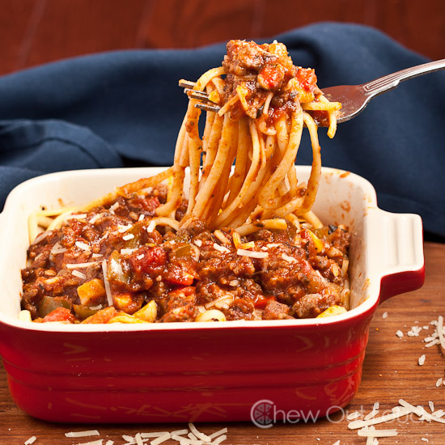
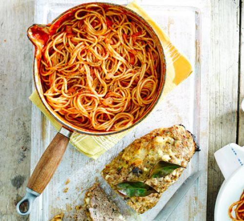
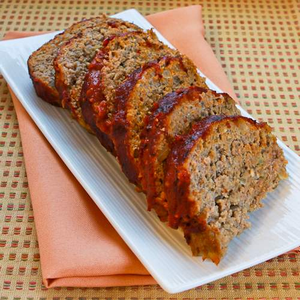

Easy meatloaf with spaghetti & tomato sauce
  
Ingredients
The ingredients are as follows:
- 2 tbsp olive oil,plus extra for greasing and drizzling
- 2 onions, finely chopped
- 500g pork mince
- 1 large egg
- 75g fresh breadcrumbs
- 15 sage leaves, roughly chopped
- 100g feta, crumbled
- 3 bay leaves, 1 finely chopped
- 680g jar passata
- 600g spaghetti
Method
How to cook it is as follows
- Heat oven to 180C/160 fan/gas 4 and grease an ovenproof dish. Heat the oil in a large frying pan over a medium heat, add the onions, sizzle for 5 mins, then remove half and put in a large bowl with the mince, egg, breadcrumbs, sage, feta and chopped bay. Season well and mix. Shape into a long sausage shape and transfer to the greased dish. Put the remaining bay leaves on top, drizzle with a little more oil and put in the oven for 40-45 mins until cooked through.
- Meanwhile, keep the remaining onions on a low heat in the pan. Cook for 2 mins, then increase the heat and pour in the passata with 70ml water. Bubble for 30 mins on a low heat, stirring often, or until the meatloaf is ready to come out of the oven. Season to taste.
- Cook the spaghetti following pack instructions. When everything is ready, toss the spaghetti in the tomato sauce, slice the meatloaf and let everyone help themselves.